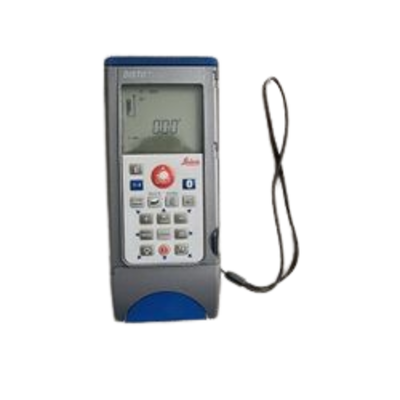
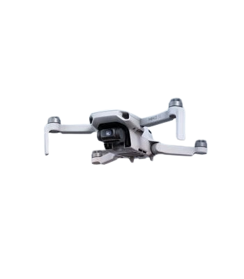
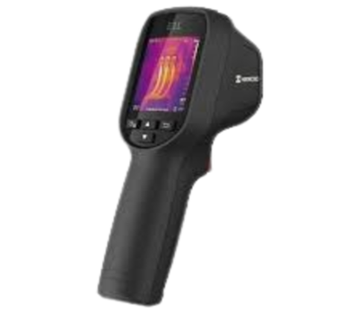
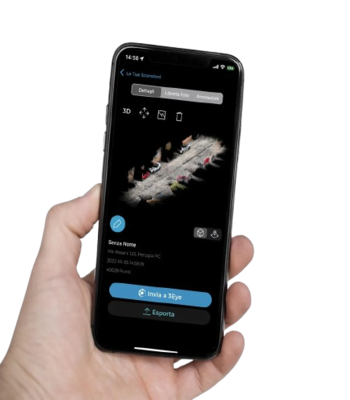
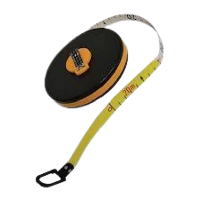

Disto Laser
Cos'è: Misuratore laser portatile ad alta precisione.
Utilizzo: Permette di misurare distanze, superfici e volumi in modo rapido, anche da un solo operatore.
Risultato: Misure immediate e affidabili da utilizzare in pianta o nei calcoli metrici.
Procedura: Si punta il raggio laser su una superficie e si legge il valore sul display, salvando o trasferendo i dati via Bluetooth o app.

Drone con Fotogrammetria
Cos'è: Velivolo radiocomandato dotato di fotocamera ad alta risoluzione.
Utilizzo: Raccoglie foto aeree per generare modelli 3D, ortofoto e planimetrie dettagliate del terreno o fabbricato.
Risultato: Nuvola di punti, ortomosaico, modello 3D, curve di livello.
Procedura: Si pianifica il volo con software dedicato, si eseguono gli scatti fotogrammetrici, poi si elaborano i dati con software (es. 3DF Zephyr).

Termocamera
Cos'è: Sensore a infrarossi che rileva la temperatura superficiale degli oggetti.
Utilizzo: Individua dispersioni termiche, ponti termici, infiltrazioni e umidità.
Risultato: Immagini termografiche con mappa termica a colori.
Procedura: Si scattano immagini in ambienti controllati e si analizzano con software per interpretare le anomalie.

Cellulare con Sensore LiDAR
Cos'è: Smartphone dotato di scanner LiDAR integrato per scansione tridimensionale.
Utilizzo: Esegue scansioni rapide di interni o oggetti per generare modelli 3D.
Risultato: Mesh 3D compatibili con software CAD/BIM.
Procedura: Si effettua una scansione con app dedicata, poi si esporta il file per elaborazioni successive.

Fettuccia Metrica
Cos'è: Nastro millimetrato utilizzato per misure lineari tradizionali.
Utilizzo: Indispensabile per rilievi manuali, verifica di misure e controlli rapidi in cantiere.
Risultato: Dati grezzi precisi per disegni bidimensionali o confronti sul posto.
Procedura: Si stende la fettuccia tra due punti e si annotano manualmente le misure rilevate.